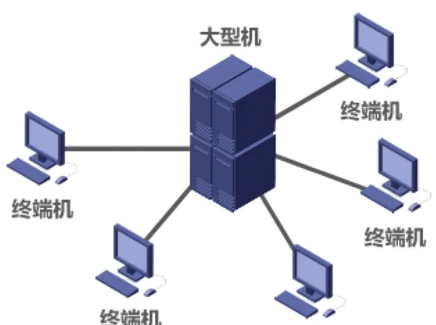

计算机通信与网络 · 第 1 章 概述
1.4 计算机网络的定义和分类
前面几节我们一直在使用「计算机网络」「互联网」这些词，但还没有认真回答一个最基本的问题：什么才算计算机网络？本节先给出计算机网络的定义，并逐字解释定义里的关键词；再从交换技术、使用者、传输介质、覆盖范围和拓扑结构五个角度，把形形色色的网络归入一个清晰的分类框架。
1. 计算机网络的定义
到目前为止，计算机网络并没有一个精确统一的定义，不同的教材和文献表述并不完全一致。但最通行、也最便于记忆的是最简单的定义：
计算机网络是一些互相连接的、自治的计算机的集合。
这个定义很短，每个词都有讲究：
- 互连：指计算机之间可以通过有线或无线的方式进行数据通信；
- 自治：指互联的必须是独立的计算机，它有自己的硬件和软件，可以单独运行使用 —— 一台只能被动显示、不能独立处理的终端机不算；
- 集合：指至少需要两台计算机，一台机器自己连自己构不成网络。

由于「最简单的定义」过于宽泛，教材又给出了一个较好的定义：计算机网络主要是由一些通用的、可编程的硬件互连而成的，而这些硬件并非专门用来实现某一特定目的（例如，传送数据或视频信号）；这些可编程的硬件能够用来传送多种不同类型的数据，并能支持广泛的和日益增长的应用。
这个定义里藏着两点重要的引申：
- 计算机网络所连接的硬件并不限于一般的计算机，而是包括了智能手机等智能硬件；
- 计算机网络并非专门用来传送数据，而是能够支持很多种应用（包括今后可能出现的各种应用）。
换句话说，定义强调的是「通用、可编程、能承载多种应用」，而不是「某一种特定的用途」。这也解释了我们今天为什么能用同一张网络打电话、看视频、开视频会议。
2. 计算机网络的分类
网络可以从很多个角度去看，看的角度不同，得到的分类也不同。下面五个角度是教材最常用的，把它们放在一起，就构成了一张网络分类的全景图。
（1）按交换技术分类
按网络在传送数据时所采用的交换技术，可以分为电路交换网络、报文交换网络和分组交换网络。这三种交换方式的原理和优缺点，上一节 1.3 节已经详细讨论过：电路交换先建立独占的通路，报文交换以整份报文为单位存储转发，分组交换则把报文切成带首部的分组逐站转发。因特网属于分组交换网络。
（2）按使用者分类
按网络的使用者（即谁有权使用）可以分为：
- 公用网：由电信运营商等建设并运营，面向社会公众开放，任何人按规定交费即可使用，例如电信的公用数据网；
- 专用网：某个部门或单位为本单位的需要而建设，不向本单位以外的人开放，例如军队、铁路、银行系统的内部网络。
（3）按传输介质分类
按传输介质可以分为有线网络和无线网络：前者用双绞线、同轴电缆、光纤等看得见的介质连接，后者依赖无线电波、红外线等在自由空间中传播。传输介质的详细内容将在 2.2 节展开。
（4）按覆盖范围分类
按覆盖的地理范围由大到小，通常分为四类：
- 广域网 WAN（Wide Area Network）：覆盖范围从几十公里到几千公里，可以跨越城市甚至国家，是因特网的核心部分；
- 城域网 MAN（Metropolitan Area Network）：覆盖范围约几公里到几十公里，作用范围一般是一个城市；
- 局域网 LAN（Local Area Network）：覆盖范围几十米到几公里，通常是一个学校、一个企业或一栋楼；
- 个域网 PAN（Personal Area Network）：覆盖范围约几十米以内，围绕个人身边的设备组网，例如蓝牙耳机与手机之间的连接。
（5）按拓扑结构分类
按网络中各结点的连接形状，可以分成四种基本拓扑：
- 总线型网络：所有结点都接到一条公共总线上，结构简单、布线省，但总线一旦故障全网瘫痪；
- 星型网络：所有结点各自用一条链路连到中心设备，便于管理和隔离故障，代价是中心设备至关重要；
- 环型网络：结点首尾相连成环，数据沿环单向（或双向）传递；
- 网状型网络：结点之间有多条路径相连，可靠性高，但结构复杂、成本高，广域网的骨干多采用这种结构。
需要说明的是，这五个角度是并列的观察视角，不是互斥的类别。同一条网络按交换技术看是分组交换网络，按使用者看可能是公用网，按覆盖范围看可能是局域网 —— 分类的目的是帮助我们抓住一个网络最关键的特征，而不是给它贴一个唯一的标签。
本节小结
- 计算机网络的精确定义并未统一；最简单定义是「一些互相连接的、自治的计算机的集合」，其中互连指可通过有线或无线方式通信，自治指计算机独立、有自己的软硬件，集合指至少两台；
- 较好的定义强调「通用的、可编程的硬件互连」：连接的硬件不限于一般计算机（还包括智能手机等），网络也不专门用于传送数据，而能支持广泛且日益增长的应用；
- 分类的五个常用角度：按交换技术（电路交换 / 报文交换 / 分组交换，见 1.3 节）、按使用者（公用网 / 专用网）、按传输介质（有线 / 无线）、按覆盖范围（WAN / MAN / LAN / PAN）、按拓扑结构（总线型 / 星型 / 环型 / 网状型）；
- 五个角度是并列的观察视角而非互斥类别，同一个网络可以从多个角度同时描述。